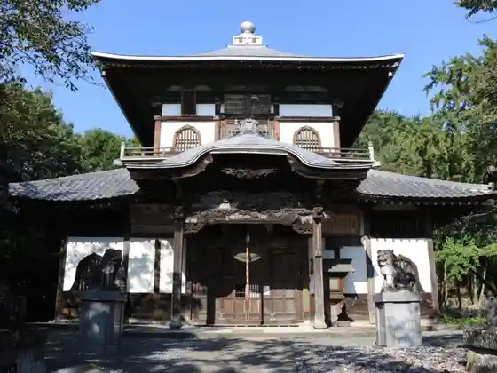
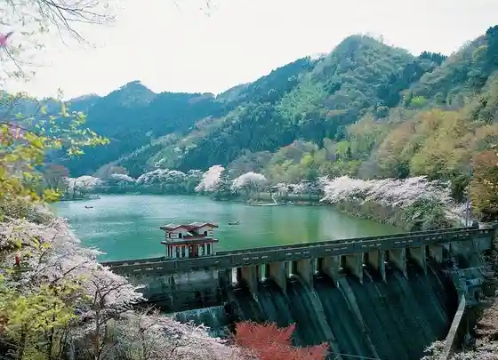
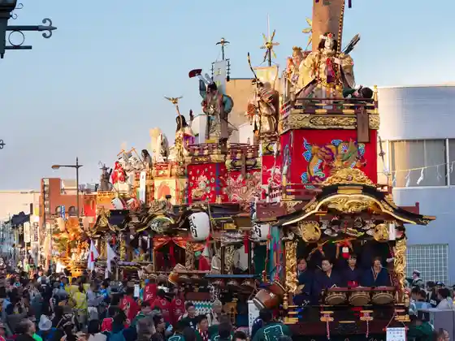
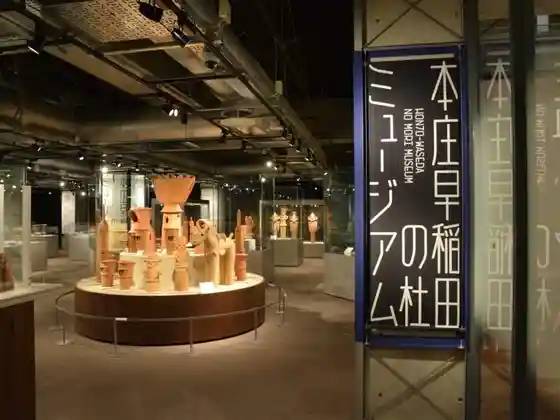

Mariigorudo Oka Park
Honjo, Saitama · Official / source link
Joshin In Hyaku Karada Kannon Do
Honjo, Saitama · 0495-72-6742 · Official / source link

Mase Mizumi
Honjo, Saitama · 0495-72-1334 · Official / source link

Honjo Festival
Honjo, Saitama · 0495-25-1111 · Official / source link

Honjo Waseda no Mori Museum
Honjo, Saitama · 0495-71-6878 · Official / source link

Kyu Honjo Shogyo Ginko Renga Soko
Honjo, Saitama · 0495-71-6685 · Official / source link
Fureai Village Izumi Tei
Honjo, Saitama · 0495-72-0280 · Official / source link
Hone Namita no Fuji (Nagaizumi Tera)
Honjo, Saitama · 0495-72-1331 · Official / source link
Hanawa Hokiichi Memorial Museum
Honjo, Saitama · 0495-72-6032 · Official / source link
Honjo Infomeshon Center
Honjo, Saitama · 0495-22-1690 · Official / source link